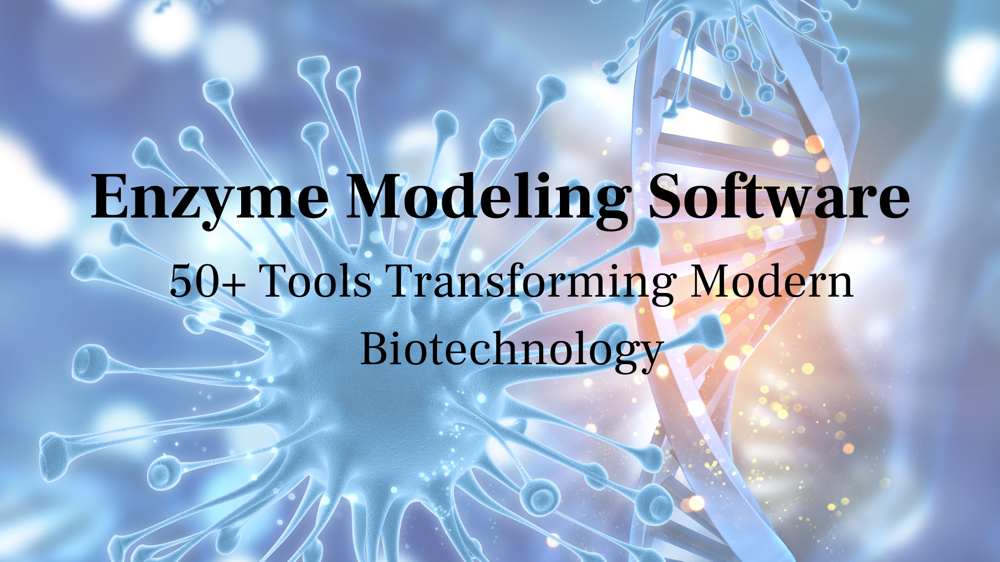
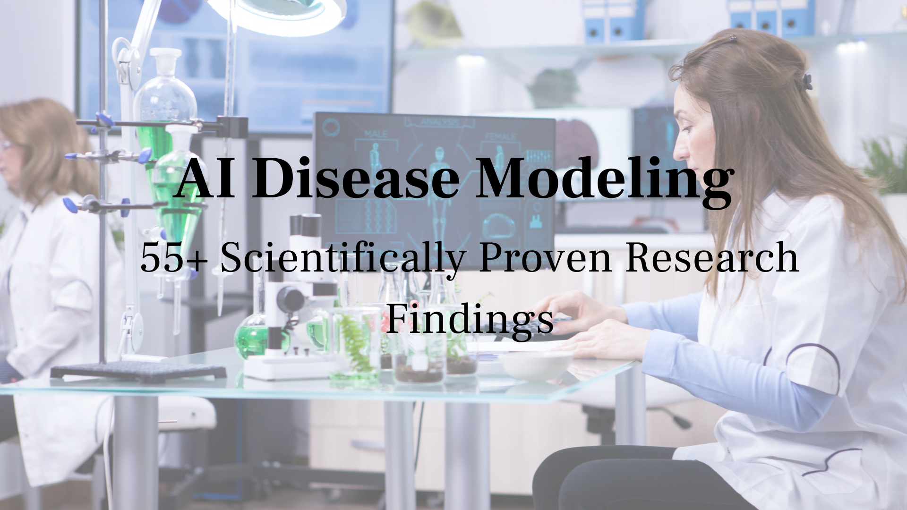
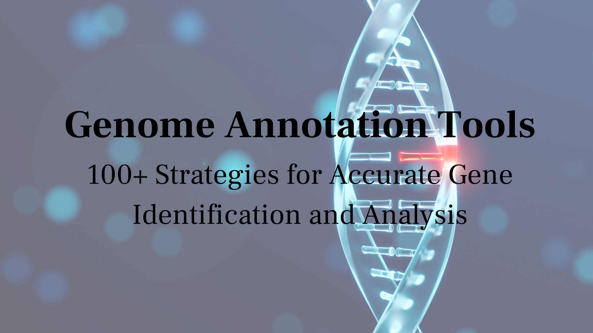
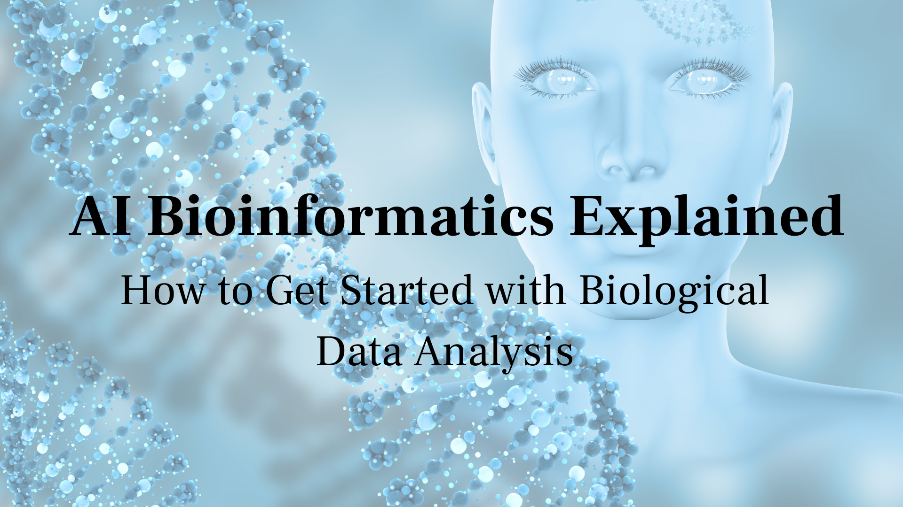
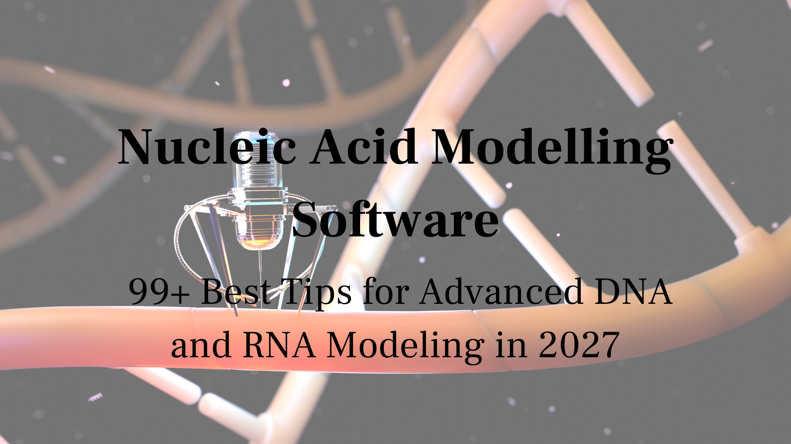
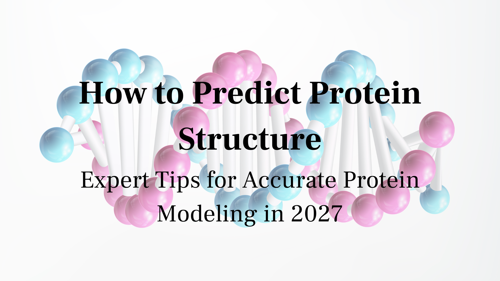
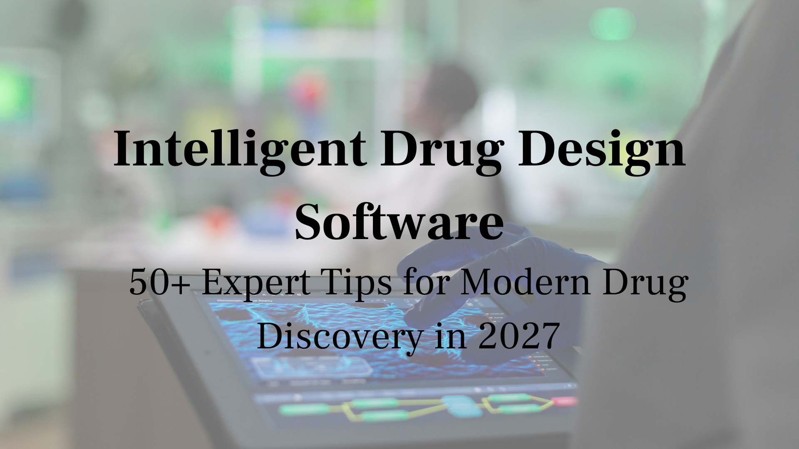
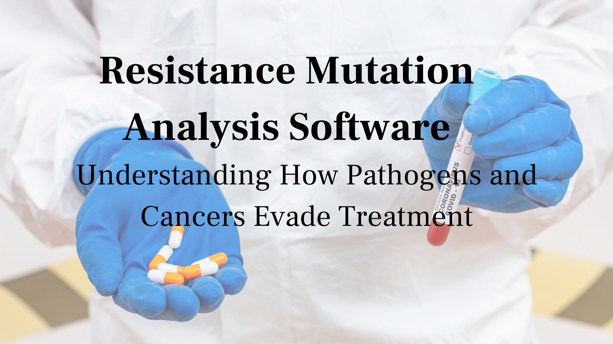

Integrated Drug Discovery Platforms
How are integrated drug discovery platforms unifying computational workflows to accelerate the entire drug discovery pipeline?
Read More
Immunoinformatics Tools
How are immunoinformatics tools accelerating vaccine design and immunotherapy development through computational biology?
Read More
AI in Life Sciences Industry
How is AI in life sciences industry transforming drug discovery, diagnostics, and healthcare delivery across the sector?
Read More
Ion Channel Modeling Software
How does ion channel modeling software improve cardiac safety assessment and guide the design of ion channel drugs?
Read More
Interaction Network Analysis Tools
How are interaction network analysis tools mapping biological relationships to advance drug target discovery?
Read More
Isoform Analysis RNA Seq
How does isoform analysis RNA seq reveal alternative splicing events that drive disease and therapeutic targets?
Read More
Intelligent Drug Design Software
How is intelligent drug design software using AI to enable smarter and faster pharmaceutical drug design?
Read More
Jupyter Notebook Bioinformatics Tutorial
How do you use Jupyter notebooks for reproducible bioinformatics analysis? A practical beginner's guide.
Read More
Kinase Inhibitor Design Methods
What computational strategies are used in kinase inhibitor design methods to achieve high selectivity across the kinome?
Read More
Knowledge Graph for Drug Discovery
How does a knowledge graph for drug discovery connect biological data to accelerate target identification and repurposing?
Read More
Kinetic Modeling Software
How does kinetic modeling software simulate enzyme kinetics and biological dynamics to guide drug discovery?
Read More
Lead Compound Optimization Strategies
What are the key lead compound optimization strategies that transform initial hits into viable drug candidates?
Read More
Ligand Based Drug Design Tutorial
How do you use known active compounds to discover new drug candidates? A complete ligand based drug design tutorial.
Read More
Machine Learning for Drug Discovery
How is machine learning for drug discovery transforming target identification, virtual screening, and lead optimization?
Read More
Molecular Docking Tutorial
A complete beginner's molecular docking tutorial covering protein preparation, docking setup, and result interpretation.
Read More
Molecular Dynamics Simulation Software
Which molecular dynamics simulation software is best for your research? Compare GROMACS, AMBER, NAMD, and OpenMM.
Read More
Multi Target Drug Discovery
How does multi target drug discovery design single molecules that act on multiple disease targets to improve efficacy?
Read More
Metabolomics Data Analysis Tools
How are metabolomics data analysis tools helping researchers interpret small molecule profiles in disease and drug research?
Read More
Mutation Impact Prediction Software
How does mutation impact prediction software predict the functional consequences of genetic variants for disease research?
Read More
Neural Networks for Drug Discovery
How are neural networks for drug discovery transforming molecular property prediction and pharmaceutical research?
Read More
Omics Data Integration Tools
How are omics data integration tools combining genomics, proteomics, and metabolomics for deeper biological insights?
Read More
Open Source Drug Discovery Software
What are the best open source drug discovery software tools available for computational pharmaceutical research?
Read More
Oncology Drug Discovery AI Companies
Which oncology drug discovery AI companies are leading the transformation of cancer drug development today?
Read More
Network Pharmacology Analysis
How does network pharmacology analysis reveal drug mechanisms and predict combination therapies through biological networks?
Read More
Nucleic Acid Modeling Software
How does nucleic acid modeling software predict DNA and RNA structures to support therapeutic nucleic acid design?
Read More
NGS Data Analysis Pipeline
How do you build a robust NGS data analysis pipeline for reliable next generation sequencing data processing?
Read More
Electronic Lab Notebook Software Comparison
Which electronic lab notebook software is right for your lab? We compare the best platforms for modern research teams.
Read More
Energy Minimization in Molecular Modeling
Why is energy minimization in molecular modeling essential before any simulation? Learn the methods and tools used.
Read More
Epigenetics Data Analysis Tools
How are epigenetics data analysis tools helping scientists decode gene regulation and chromatin accessibility?
Read More
Evidence Based Drug Development
How is evidence based drug development reducing clinical trial failures and improving pharmaceutical success rates?
Read More
Epitope Prediction Software
Discover how epitope prediction software is accelerating vaccine design and immunotherapy research worldwide.
Read More
Fragment Based Drug Discovery Tools
How are fragment based drug discovery tools unlocking new chemical scaffolds for previously undruggable targets?
Read More
Free Molecular Docking Software
What are the best free molecular docking software tools available for drug discovery research today?
Read More
Free Energy Calculation Methods
How do free energy calculation methods like FEP and MM-GBSA predict binding affinities in drug discovery?
Read More
Functional Genomics Analysis Tools
How are functional genomics analysis tools linking genes to biological functions and disease mechanisms?
Read More
Federated Learning in Healthcare
How is federated learning in healthcare enabling privacy-preserving AI collaboration across medical institutions?
Read More
Force Field Comparison Molecular Dynamics
AMBER, CHARMM, GROMOS or OPLS? A force field comparison molecular dynamics guide for choosing the right model.
Read More
Feature Selection in Bioinformatics
Why is feature selection in bioinformatics critical for building accurate predictive models from genomic data?
Read More
FDA Approved AI Drug Discovery Tools
What does it mean for an AI drug discovery tool to be FDA approved and why does it matter for pharma?
Read More
Future of AI in Pharma
What does the future of AI in pharma look like and how will it reshape drug development over the next decade?
Read More
Gene Expression Analysis Tools
How are gene expression analysis tools helping researchers interpret transcriptomic data and discover biomarkers?
Read More
Genome Analysis Software
What are the best genome analysis software tools for interpreting whole genome sequencing data accurately?
Read More
Genomic Data Interpretation Tools
How do genomic data interpretation tools turn raw sequencing data into actionable biological and clinical insights?
Read More
Generative AI for Small Molecule Design
How is generative AI for small molecule design creating entirely new drug candidates with optimized properties?
Read More
Graph Neural Networks in Drug Discovery
How are graph neural networks in drug discovery transforming molecular property prediction and drug design?
Read More
Genomics AI Companies
Which genomics AI companies are leading the transformation of genetic research and precision medicine today?
Read More
Single Cell Genomics Analysis
Discover how blockchain is being applied to transform and shape the future of healthcare worldwide.
Read More
Query Protein Sequence Database
Discover how blockchain is being applied to transform and shape the future of healthcare worldwide.
Read More
Fast Virtual Screening Methods
Discover how blockchain is being applied to transform and shape the future of healthcare worldwide.
Read More
Fast Virtual Screening Methods
Discover how blockchain is being applied to transform and shape the future of healthcare worldwide.
Read More
Cost of AI Drug Discovery
Discover how blockchain is being applied to transform and shape the future of healthcare worldwide.
Read More
Blockchain in Pharma Research
Discover how blockchain is being applied to transform and shape the future of healthcare worldwide.
Read More
AI Computational Biology
How is ai computational biology transforming genetic research and reshaping modern healthcare?
Read More
Enzyme Modeling Software
Can enzyme modeling software accurately predict reactions and speed up scientific discovery?
Read More
AI Disease Modeling
Is ai disease modeling really accurate, or are we just overtrusting it too much in healthcare?
Read MoreAI Biotech Solutions
Can ai replace scientists by 2030 through powerful biotech solutions driving success and innovation?
Read More
Genome Annotation Tools
Ever wondered how genome annotation tools are actively helping scientists identify genes accurately?
Read More
AI Bioinformatics Explained
We want to help you explore AI bioinformatics and learn to analyze complex biological data efficiently.
Read More
Nucleic Acid Modelling Software
Looking to see how nucleic acid modeling software helps scientists design accurate DNA and RNA?
Read More
How to Predict Protein Structure
How is protein structure prediction using AI helping scientists design more accurate models in biology?
Read MoreTop Life Sciences AI Companies
How are tech innovators rapidly advancing drug discovery and global healthcare innovation today?
Read More
Intelligent Drug Design Software
Discover how intelligent drug design software is revolutionizing shaping the future of healthcare.
Read More
Resistance Mutation Analysis Software
How does resistance mutation analysis software help researchers predict and overcome drug resistance in pathogens and cancer?
Read MoreResearch Informatics Platforms
How are research informatics platforms helping scientists manage, integrate, and analyze complex research data more efficiently?
Read MoreRare Disease Drug Discovery Companies
Which rare disease drug discovery companies are leading the development of treatments for patients with unmet medical needs?
Read MoreStructure Based Drug Design Tutorial
A step-by-step structure based drug design tutorial showing how to use protein 3D structures to design better drug candidates.
Read MoreSmall Molecule Discovery Process
What are the key stages of the small molecule discovery process from target identification to clinical candidate selection?
Read MoreSystems Biology Modeling Tools
How are systems biology modeling tools enabling researchers to model complex biological networks and predict drug responses?
Read More
Scaffold Hopping in Drug Discovery
How does scaffold hopping in drug discovery help medicinal chemists find new chemical frameworks while maintaining biological activity?
Read More
AI Biological Data Analysis
How is data analysis rapidly revolutionizing drug discovery and global pharmaceutical innovation today?
Read More
Big Data in Genomics
How is big data in genomics is transforming genetic research and reshaping modern healthcare worldwide?
Read More
Cancer Drug Discovery
How AI-driven cancer drug discovery is enabling researchers to design smarter therapies today?
Read More